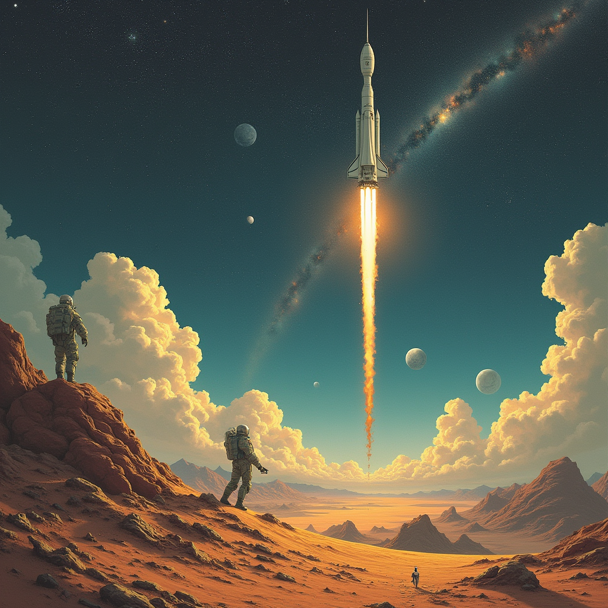
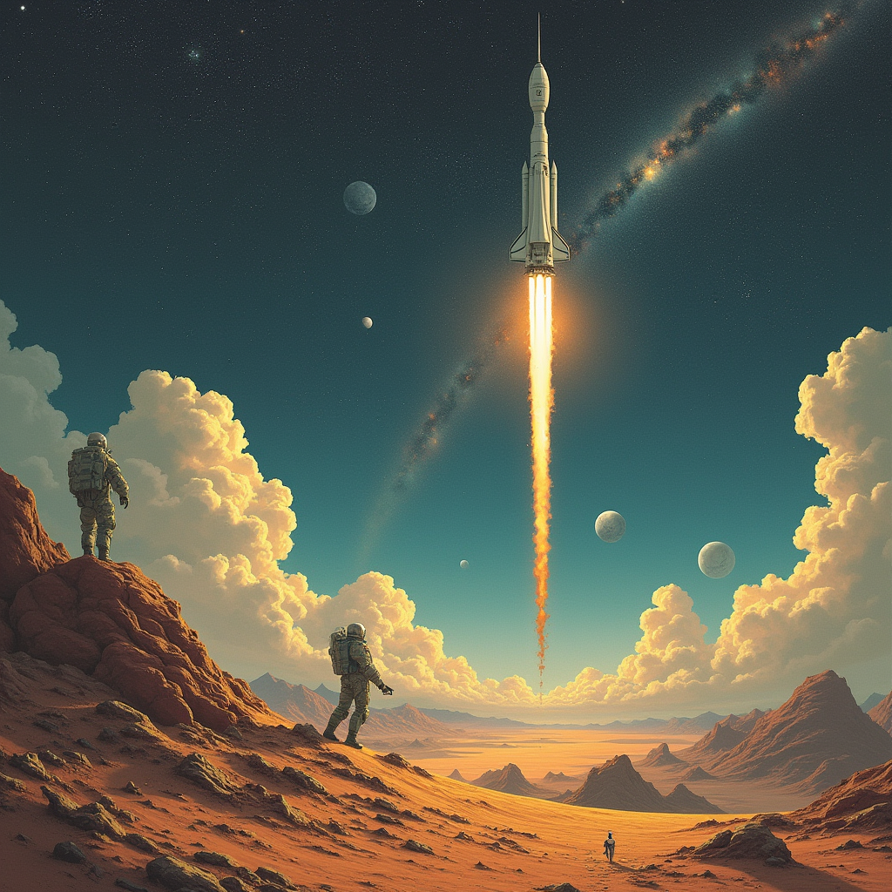

الميزات الأساسية
القيمة التعليمية
انخرط في تجربة تعليمية غامرة تجلب علوم الفضاء إلى الحياة. تعلم عن الفلك والتكنولوجيا والاستدامة بطريقة جديدة ومثيرة.
المشاركة المجتمعية
تواصل مع محبي الفضاء المتشابهين في التفكير، وتعاون في التحديات، واعمل معًا لحل المشكلات المتعلقة باستكشاف الفضاء.
التعلم المخصص
احصل على مهمات مخصصة بناءً على اهتماماتك وتقدمك. تتكيف تقنية الذكاء الاصطناعي مع تجربتك لجعل رحلتك التعليمية فريدة وفعالة.
العناصر التفاعلية
شارك في ميزات تفاعلية مثيرة مثل الاختبارات وتحديات الاستكشاف، مما يوفر لمحة عن مغامرة استكشاف الفضاء الحقيقية.
تعرف على فريقنا
عبدالله الشهري
قائد المشروع - مسؤول عن إدارة المشروع وتوجيه رؤية مستعمرة الفضاء الافتراضية.
عبدالكريم العنزي
أخصائي تقني - يركز على تنفيذ الجوانب التقنية بما في ذلك تكامل الواقع الافتراضي والذكاء الاصطناعي.
عبدالمجيد الدويش
مطور المحتوى - يقوم بإنشاء محتوى تفاعلي وتعليمي للتجربة الافتراضية.
عبدالإله الراشد
مدير المجتمع - مسؤول عن تعزيز التواصل والمشاركة المجتمعية ضمن المنصة.
جمان هلال
مصمم تجربة المستخدم / واجهة المستخدم - يضمن تجربة سهلة الاستخدام وجذابة لجميع المشاركين.
ريما أمان
أخصائي بحث - مسؤول عن البحث في أحدث التقنيات وضمان الدقة في محتوى علوم الفضاء.
رؤية المستقبل
مشروع مستعمرة الفضاء الافتراضية هو البداية فقط. في المستقبل، نطمح لتوسيع منصتنا لتشمل:
- نماذج تعليمية مخصصة تعتمد على الذكاء الاصطناعي تتكيف مع اهتمامات وتقدم كل مشارك.
- فرص تعاون في الوقت الفعلي، تمكن المشاركين من حل التحديات معًا عبر العالم.
- توسيع تجارب الواقع الافتراضي، مما يسمح للمستخدمين باستكشاف كواكب إضافية والتعرف على أنظمتها البيئية الفريدة.
- الاندماج مع مهمات الفضاء الحقيقية لتوفير أحدث المعلومات وفرص التعلم الجديدة.
- ميزات مجتمعية متقدمة، بما في ذلك هاكاثونات ذات طابع فضائي، مشاريع تعاونية، ومسابقات تعليمية.
نسعى لجعل علوم الفضاء في متناول الجميع وجذابة وملهمة، لخلق جيل جديد من عشاق الفضاء والمبتكرين.
استكشاف مستعمرة الفضاء الافتراضية
ألقِ نظرة على حياة المستعمرة لدينا. هنا يمكنك استكشاف المناطق المختلفة، وفهم دورك، والمشاركة في الأنشطة المثيرة التي تساعد في بناء المستعمرة.
 
